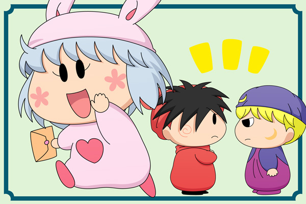

年末恒例の妖精人気投票を、２０１２年も実施しました。通算５回目となる今回は、果たしてどんな結果になったのでしょうか。以下にその結果をまとめました。
２０１２年も、トップページの投票より人気投票を実施しました。今回もたくさんの投票をありがとうございます～。［コメント一覧］
ヤシチ＆パピィ＆ムーン (2)

１位はパピィちゃん！ 前人未到のV3を見事達成です！ それも２位以下に倍以上の差を広げての１位…。ミルモ復活する際も、彼女の登場なくしての復活はありえませんね。２０１３年もこの勢いで、いろんなパピィの活躍や、ムルモとのいちゃいちゃが語られることになると思います！
２位はムーン。こちらも昨年と同じですね。サブキャラが上位にランクインする結果は、まさにムルモ屋本舗らしい結果と言えるのではないでしょうか。今年もムーンの意外な一面で盛り上がったりしそうです。
３位も昨年同様ヤシチ！ ２０１２年は掲示板でもっとも話題（ネタ）にされた妖精のような気がします。いろんな人に愛されるヤッくんなので、２０１３年はどんな扱われ方をするのか楽しみです。ヤマネとの関係は進展があるのかな？
絵の方は、１位の賞品『お菓子ツアー１泊２日の旅・ペアチケット』をゲットしたパピィが、「ムルモ～～～っ」とムルモを誘いにいきます。しかし大きくランクダウンしたムルモは、「１位だからって調子に乗るなでしゅ」とパピィを突き返し。。。果たして１泊２日のツアーはどうなるのか・・？ 右下は、「拙者たちには商品はないのか？」とこそこそ話すムーンとヤシチです(^^;。
以下に全順位を紹介します。皆さんのお気に入りの妖精は何位にランクインしましたでしょうか？
主役妖精が軒並み順位を下げていますね。６票しか入らなかったミルモは隅っこでいじけていそうです。
| 今回 | 票数 | 名前 | 2011年 | 2010年 | 2009年 | 2008年 | |
|---|---|---|---|---|---|---|---|
| １位 | 179票 | パピィ | １位 | １位 | ２位 | ２位 | |
| ２位 | 80票 | ムーン | ２位 | ３２位 | ２４位 | ||
| ３位 | 71票 | ヤシチ | ３位 | ５位 | ７位 | ８位 | |
| ４位 | 65票 | イチロー | ▲ | １３位 | ３２位 | ||
| ５位 | 63票 | ネズミ | ▲ | ８位 | ２位 | １位 | １位 |
| ６位 | 60票 | ハンゾー | ▼ | ９位 | １２位 | ３位 | ８位 |
| ７位 | 31票 | リルム | ▼ | ４位 | ２１位 | ３位 | １２位 |
| ８位 | 19票 | ヤマネ | ▲ | １２位 | ３位 | ５位 | ３位 |
| ワカバ | ▼ | ６位 | ８位 | ２４位 | ２０位 | ||
| １０位 | 14票 | ムルモ | ▼ | ５位 | ７位 | ７位 | ４位 |
| １１位 | 12票 | クモモ | ▲ | ２６位 | |||
| １２位 | 6票 | ウィン | ▲ | １５位 | １１位 | ||
| ミルモ | ▼ | ７位 | ４位 | ９位 | ５位 | ||
| １４位 | 5票 | ガビン | ▲ | ３２位 | ２４位 | １２位 | |
| アクア | ▲ | ２３位 | ３０位 | ２４位 | ２０位 | ||
| アロマ | ▲ | １７位 | １８位 | １５位 | ６位 | ||
| アンリ | ▲ | ２１位 | １５位 | １４位 | ８位 | ||
| １８位 | 4票 | アクミ | ▼ | １６位 | １７位 | ５位 | ７位 |
| マンボ | ▲ | ２６位 | ２４位 | １５位 | ２０位 | ||
| フィア | ▼ | １７位 | ３２位 | ２４位 | |||
| ２１位 | 3票 | ドンタ | ▼ | ２３位 | ３２位 | ||
| ピクモ | ▲ | ２６位 | ３２位 | ２１位 | ２０位 | ||
| ２３位 | 2票 | センリ | ▼ | ２０位 | ６位 | １７位 | １２位 |
| ２４位 | 1票 | ペータ | ▲ | ３２位 | ３２位 | １２位 | |
| ビケー | ▲ | ３２位 | ２４位 | ８位 | |||
| ゴロー | ▼ | ２１位 | ２８位 | ||||
| サスケ | ▼ | １０位 | ９位 | ９位 | １２位 | ||
| ルンバ | ▲ | １２位 | |||||
| アンナ | ▼ | １０位 | １３位 | １２位 | ２０位 |
次回は２０１３年の年末にも再び行う予定です。その際はまたたくさんの投票をよろしくお願いいたします！
(2013/1/7)